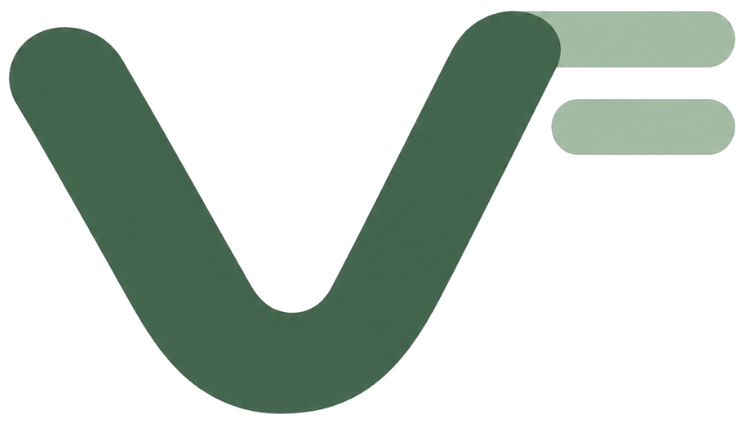
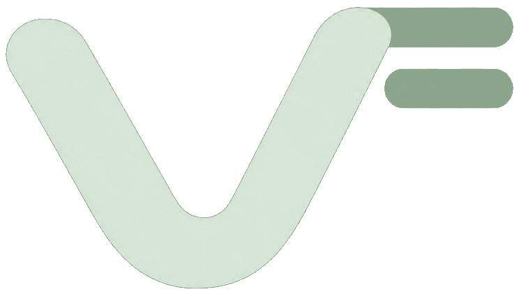

Visper
产品讨论.m4a
/Users/lin/录音/产品讨论.m4a
完成
18:05
自动识别语言
转写用时 04:08
转写稿
点击分段，从此处回听
00:00:04
我们先看一下这次产品讨论的目标。
00:00:18
界面需要更清晰，让主要操作自然出现。
00:00:52
语言自动判断，中文和英文都保留原文。
00:01:16
接下来讨论导入和转写的反馈。
00:01:42
完成之后，可以按分段回听，再导出 Markdown。
正在播放
00:41 / 18:05
点击分段跳转
Visper
产品讨论.m4a
/Users/lin/录音/产品讨论.m4a
转写中
18:05
自动识别语言
还需约 2 分钟预计 15:20 完成
68%
已用时 04:12
已处理 12:18 / 18:05
速度 2.9×
转写稿
分段实时显示
00:00:04
我们先看一下这次产品讨论的目标。
00:00:18
界面需要更清晰，让主要操作自然出现。
00:00:36
We should keep the workflow simple and predictable.
正在转写后续内容…
播放
点击分段跳转
Visper
正在准备转写模型
首次使用需下载一次，之后可离线转写
1.8 / 3.1 GB · 57%
把录音变成文字
拖入录音，或选择本机文件
M4A · MP3 · WAV · FLAC · AAC
录音与转写稿保留在本机
Visper
正在准备转写模型
首次使用需下载一次，之后可离线转写
1.8 / 3.1 GB · 57%
模型下载失败
连接下载地址失败：网络不可用。
不能导出。没有已保存的分段。
产品讨论.m4a
已导出
/Users/lin/录音/产品讨论.m4a
这是一份包含很长文件名称的产品讨论记录.m4a
/Users/lin/文稿/年度计划/项目资料/产品研究/转写测试/产品讨论记录.m4a
产品讨论.m4a
导出使用上次已保存的转写稿
自动识别语言
还需约 2 分钟预计 15:20 完成
68%
已用时 04:12
已处理 12:18 / 18:05
速度 2.9×
正在估算剩余时间…
2%
已用时 00:12已处理 00:18 / 18:05
正在准备录音…
00:00:04
我们先看一下这次产品讨论的目标。
00:00:18
界面需要更清晰，让主要操作自然出现。
00:00:52
语言自动判断，中文和英文都保留原文。
还没有转写稿。
正在转写，分段将在这里显示。
录音中未得到可转写的文字。
已取消，没有分段。
这次转写没有保存分段。
正在播放
00:41 / 18:05
点击分段跳转
已暂停
00:41 / 18:05
点击分段跳转
播放
原录音文件缺失，无法播放
找不到原录音文件
转写稿已保留，可继续阅读和导出。
找不到原录音文件
空转写稿已保留，原录音文件缺失，无法播放或重新转写。
找不到原录音文件
无法读取原录音文件，转写和播放不可用。
转写失败
无法解码录音。上次成功保存的转写稿仍然可用。
上次转写稿已保留。
上次转写稿已保留。
课程录音.mp3
/Users/lin/录音/课程录音.mp3
等待中
40:00
模型准备完成后自动开始
选择左边的一条录音